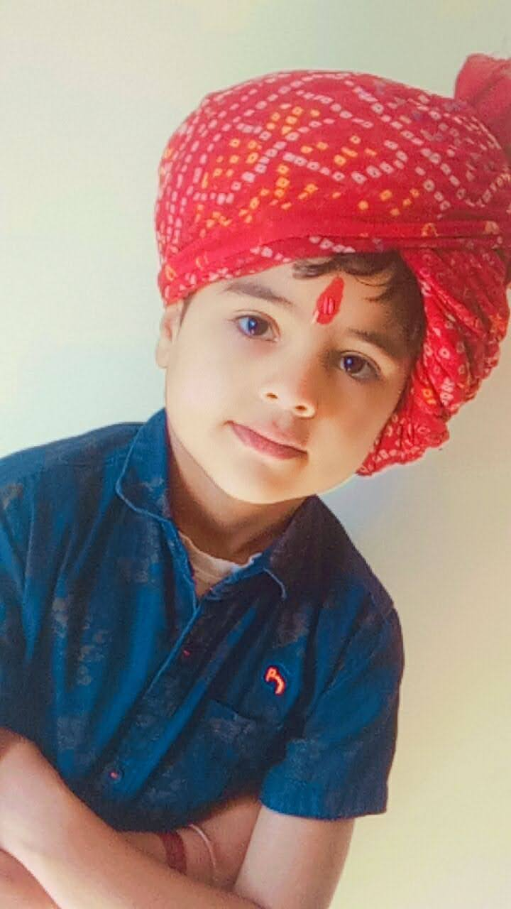
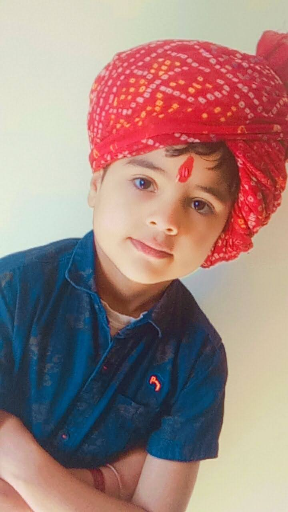

🈠Age 1
yeah! my first b'day
🈠Age 2
🧸 home-made cake was too yum!

🈠Age 3
✨ looking too cool
🈠Age 4
🧸 b'day party
🈠Age 5
🴠yoo! horse ride
🈠Age 6
ğŸ˜too big cake for me
🈠Age 7
😘 cutie me
🈠Age 8
🥳 got too many giftes
🈠Age 9
🧸I am even more cutie than 🧸
🈠Age 10
😠celebrated with my bros
🈠Age 11
😄 handome hunk

 
